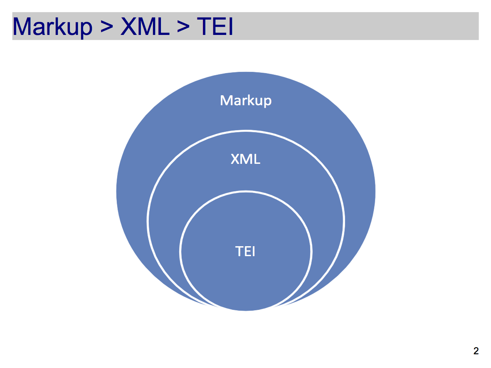

Intro TEI
From:
José Luis Losada Palenzuela,
Markup, XML, TEI. Character, structure, guidelines,
<http://editio.github.io/slides/xml-tei>,
2016.
✽

Markup make explicit(to a machine)what is implicit(to a person)
XML vs. HTML
- XML is extensible: it does not consist of a fixed set of tags;
- XML documents must be well-formed according to a defined syntax;
- XML documents can be formally validated against a schema;
- XML is more about the meaning of data than about presentation.
"Miguel de Cervantes escribió el Quijote"
Procedural MARKUP
Miguel de Cervantes escribió el Quijote Descriptive MARKUP
MarkupMiguel de Cervantes escribió el Quijote
Visualizationname {font-weight: bold;} title {font-style: italic;}
Process<xsl:for-each select="//title">

C. Schöch Digitale Textedition mit TEI (Tutorial)
Text Encoding Initiative
XML Golden Rules
An element consists of a start-tag, optional content, and an end-tag. Miguel de Cervantes
An element may have attributes, each consisting of a name and a value. Miguel de Cervantes
An XML document may contain processing instructions or comments.<? xml-stylesheet type="text/css" href="visualize-tei-xml.css"?>
Elements and attributes are case sensitive. <name> ≠ <Name>
Empty elements can use a minimized tag syntax. <pb/> =
TEI basic structure

TEI basic structure
<teiHeader>

TEI basic structure
<teiHeader>

Content in the <teiHeader>
Bym złożył sonet, Violente mię prosi
Lope de Vega Carpio
Workshop's materials (Wrocław)
14/10/2016
TEI basic structure
<text>

TEI basic structure
<text>

TEI basic structure
<text>

Content in the <text>
<body>
<head>Do czytelnika</head>
Ani sprawiedliwemu zasady, ani mądremu rady, chociaż nikt ich nie zna w stopniu dostatecznym dla siebie samego.
</body>
oXygen: XML editor with support for TEI encoding
TEI Guidelines
TEI modules
Elena Spadini, Intro TEI, <https://elespdn.github.io/labMonaci1-xmlTei.html#/>, 2016.